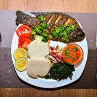
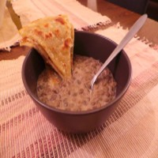
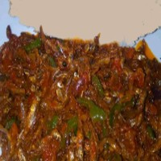

Our Specials

1

Mexicano Fish & Ugali
Spicy fish stew and Ugali with a blend of Mexican cheeses.
KES 600
2

Legendary Phulka with Pojo
Layers of light tasty phulka with hot coconut bean stew(swahili style).
KES 1,000
3

Fried Rastrineobola Argetea with Wimbi Ugali and Guacamole
This is a vegan delicacy packed with strength for the whole day, stir fried served with guacamole salad and Wimbi Ugali.
KES 1,200
4

Rotisserie Kienyeji Chicken
Tender Kienyeji chicken(western kenya quality) slow roasted on the rotisserie, flavored with spicy and fragrant jerk sauce and served with fried plantains and sliced mango. Warning, very spicy!
KES 1,500
5

Vegeterians Delight
Traditional mbogas served with the starch of the day.
KES 400
6

Chapatian Delight
Swahili chapati either oily-soft or lean-crunchy served with the stew of the day.
KES 400